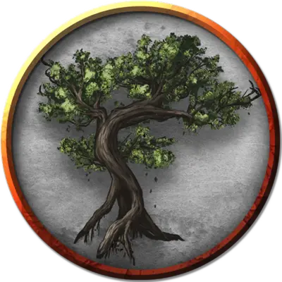

Пробудившийся зархвуд
Awakened Zurkhwood
Огромное Растение, без мировоззрения

Класс Доспеха 13 (природный доспех)
Хиты 59 (7к12 + 14)
Скорость 20 футов
| мод | спас | ||
|---|---|---|---|
| СИЛ | 19 | +4 | +4 |
| ЛОВ | 6 | −2 | −2 |
| ТЕЛ | 15 | +2 | +2 |
| мод | спас | ||
|---|---|---|---|
| ИНТ | 10 | +0 | +0 |
| МДР | 10 | +0 | +0 |
| ХАР | 7 | −2 | −2 |
Уязвимость к урону огонь
Сопротивление урону дробящий, колющий
Чувства тёмное зрение 120 футов, пассивное Восприятие 10
Опасность 2 (450 опыта)
Бонус мастерства +2
Особенности
Языки. - один язык, известный создателю (Если пробудившийся зархвуд был создан властителем миконидов, то он не может разговаривать).
Обманчивая внешность. Пока зархвуд остается без движения, он неотличим от обычного зархвуда.
Действия
Размашистый удар. Рукопашная атака оружием: +6 к попаданию, досягаемость 10 футов, одна цель. Попадание: Дробящий урон 14 (3к6 + 4).
Описание
Это существо – обычный гриб зархвуд (см. «Грибы Подземья» в главе 2) который обрел разум и подвижность. Пробудившийся зархвуд может быть создан прочтением заклинания пробуждение разума [awaken] на обыкновенный зархвуд. Властитель миконидов может создать одного такого путем проведения длительного ритуала.